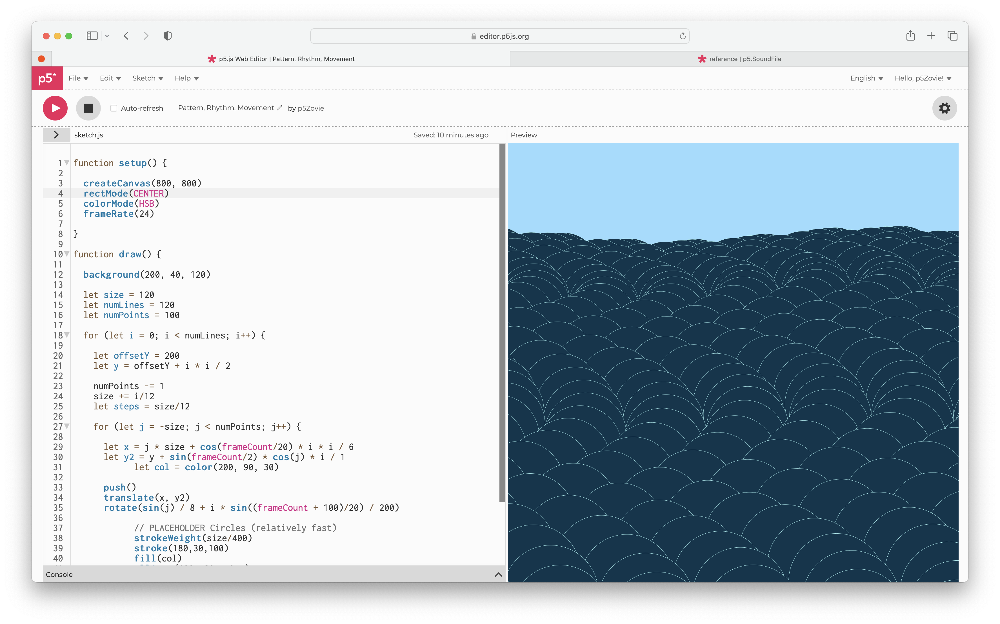

Creating Pattern, Rhythm, and Movement in p5.js
Process
Problems that I Encountered
The most intriguing challenge I encountered involved molding the movement of the chosen shape into the envisioned form. I aimed to replicate the intricate dynamics of woven fabric being manipulated. Drawing inspiration from Julian Labet's "The Sea of Squares" on Openprocessing Check it out here!, I modified the shape of the objects from squares to ellipses to emulate thread. Alterations extended to the background color and the offset for each shape, creating a more interwoven appearance when stacked. Additionally, adjustments were made to the strokeWeight, stroke, and fill color of the ellipses. By manipulating the constants—size, numLines, and numPoints—I gained control over the shape's size and the quantity of lines and shapes displayed. Experimentation with values within the for and let statements allowed me to fine-tune the cadence of movement within the sketch.
